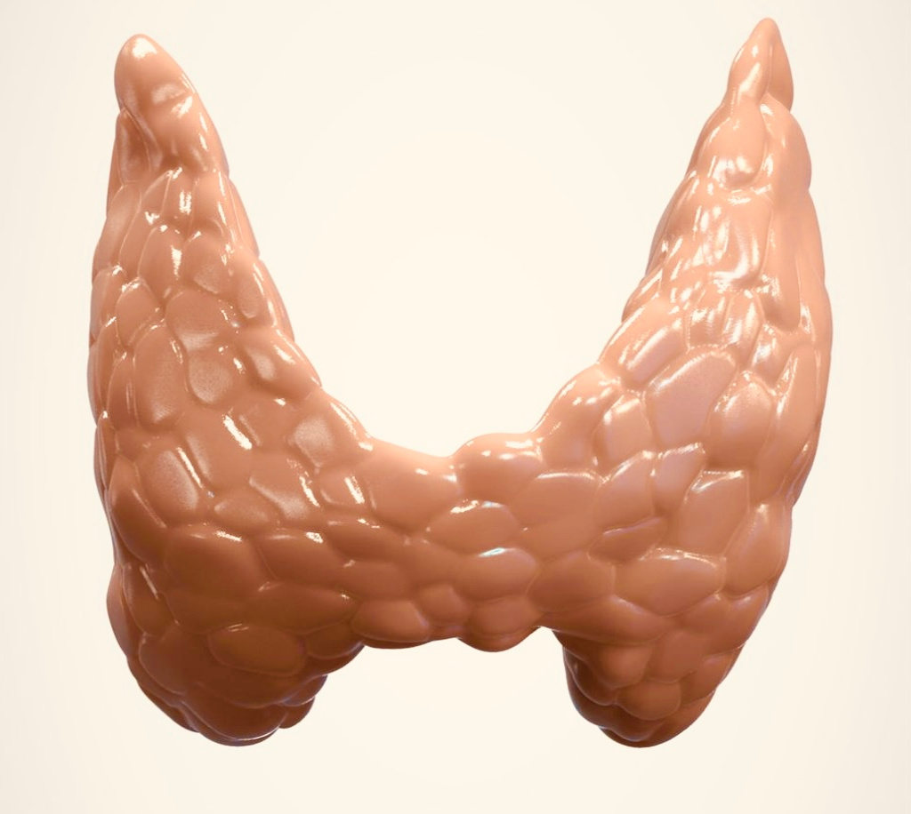
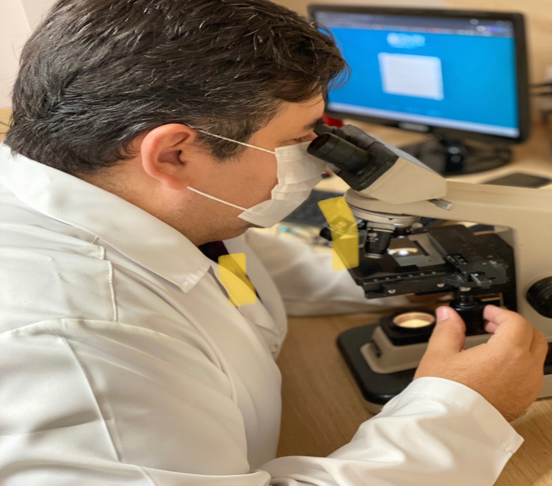
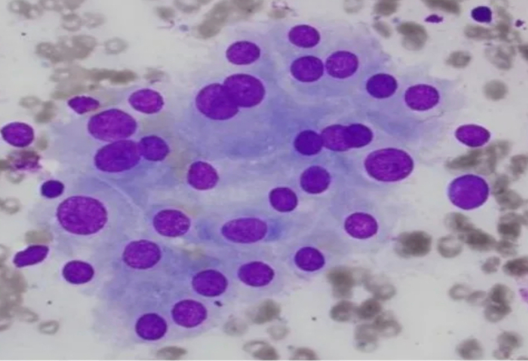
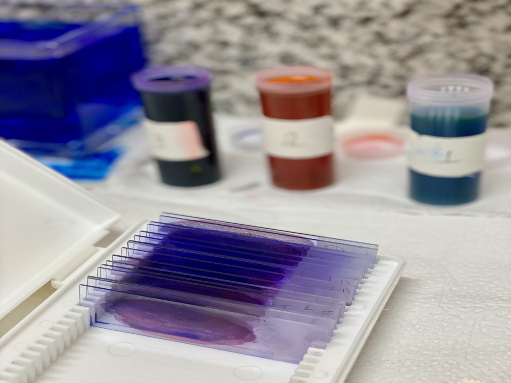
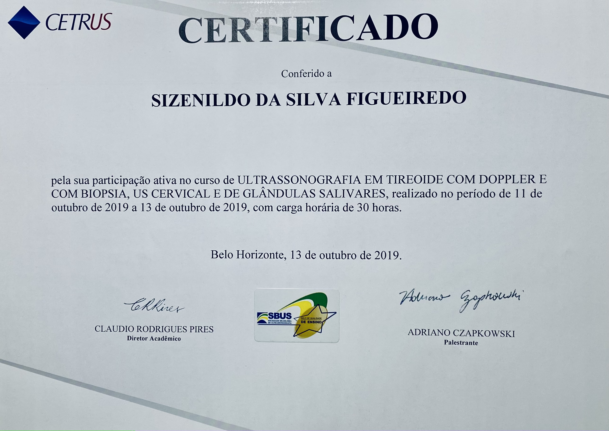

Dr Sizenildo, o que é uma punção aspirativa por agulha fina (PAAF) da tireoide?
É um procedimento que remove uma pequena amostra de células da glândula tireoide através de uma pequena e fina agulha. A amostra é enviada em seguida ao laboratório. O procedimento é menos invasivo do que as biópsias cirúrgicas abertas e fechadas, as quais envolvem incisões maiores em sua pele. A PAAF é um procedimento muito seguro, com risco mínimo de complicações.
A glândula tireóide está na porção ântero-inferior do seu pescoço, tem forma de borboleta, com 2 lobos conectados por uma estreita faixa de tecido chamada istmo. É uma glândula endócrina que produz os hormônios tireoidianos (T3/T4). Estes hormônios têm muitas funções importantes para manter o nosso bem-estar.
Em alguns casos, nódulos se formam dentro da glândula. Quando grandes, você pode notar um pequeno abaulamento na área da glândula. Na maioria das vezes, os nódulos não são palpáveis e não são perigosos. Mas em alguns casos eles podem ser uma lesão maligna (câncer).
Por que surgem nódulos e quando é necessário fazer uma PAAF da tireoide?
Os pesquisadores não sabem o que causa o surgimento da maioria dos nódulos da tireoide. Eles são muito comuns, no entanto. Certos problemas com a glândula tireoide, como a tireoidite de Hashimoto, podem aumentar suas chances de surgir um nódulo na tireoide. Nódulos de tireóide são muito mais comuns em mulheres do que em homens.Os nódulos tendem a crescer durante a gravidez. As pessoas que fizeram tratamentos de radiação no pescoço também são mais propensas a desenvolver nódulos. Seu risco de desenvolver nódulos de tireoide ou câncer de tireoide aumenta se membros de sua família já tiveram tumores da tireoide e alguns outros tipos específicos de câncer.
Apenas uma pequena porcentagem dos nódulos da tireoide acaba sendo câncer. É importante identificar um nódulo canceroso o mais rápido possível, para que você possa iniciar o tratamento rapidamente.
Nem todo mundo que tem um nódulo na tireoide precisa de uma biópsia aspirativa por agulha fina. Seu médico pode iniciar a pesquisa destes com palpação local e uma ultrassonografia do pescoço. Quando realizado por médicos experientes e de modo detalhado, a ultrassonografia já fornece informações suficientes para suspeitar se um nódulo é ou não maligno. Para isso, utilizamos a classificação TI-RADS, proposta pelo Colégio Americano de Radiologia. Quanto maior for a classificação, maior será o risco de câncer para o nódulo em análise e provavelmente uma PAAF deve ser realizada.
Como é realizada a PAAF da tireoide?
O procedimento é realizado usando-se um aparelho de ultrassonografia, que usa ondas sonoras de alta frequência para fornecer uma imagem contínua do nódulo. Isso permite guiar a agulha exatamente para o local certo. Também evita danos a outras estruturas adjacentes. Uma substância degermante será aplicada em seu pescoço, onde o detector de ultrassom será usado.
Em alguns casos, pode-se injetar um anestésico local na área antes de inserir a agulha. Como a agulha é muito fina e pequena, isso geralmente não é necessário!
Depois de limpar a área, será inserida a agulha fina na glândula tireoide e avançará lentamente a mesma até o centro do nódulo, movendo-a para frente e para trás várias vezes.
A agulha está conectada a uma seringa que pode aplicar sucção e portanto, remover células do nódulo. Após a retirada da agulha, essas células serão colocadas em uma lâmina. Este procedimento pode ser refeito para obter diferentes amostras de diferentes partes do nódulo ou quando a amostra está inadequada para análise. Às vezes, o nódulo será todo ou principalmente fluido. O fluido pode ser removido durante a punção, reduzindo muito o volume do nódulo.
Após o procedimento, as células serão enviadas para um laboratório de patologia e analisadas quanto a sinais de câncer. Um pequeno curativo será colocado sobre o local de inserção da agulha.
Após a realização da PAAF, a maioria das pessoas poderá retomar suas atividades normais imediatamente. Você pode remover seu curativo dentro de algumas horas.
O local da PAAF pode ficar dolorido por algumas horas após a realização do procedimento. Você pode tomar medicamentos analgésicos de venda livre, se necessário.
São necessários alguns dias para obter o resultado do teste citopatológico. Esta informação sobre a entrega do mesmo será detalhada ao término do procedimento.
Se o seu nódulo da tireoide não for câncer, talvez você não precise de nenhum tratamento adicional. Seu médico pode querer monitorar seu nódulo. Porém, você pode precisar de outra biópsia no futuro, quando o mesmo muda com o passar do tempo e entram em categorias de risco aumentado pela classificação TI-RADS.
Você provavelmente precisará de tratamento cirúrgico se seu nódulo indicar sinais de malignidade (câncer). Felizmente, a maioria dos cânceres de tireoide é curável.
A análise das células é feita seguindo os critérios da classificação de BETHESDA, a qual contempla 6 categorias diagnósticas. Os com classificação Bethesda VI têm uma chance de 97-99% de realmente serem malignos, sendo necessária a realização de tireoidectomia (retirada da tireoide).
Mas apesar de todas essas classificações da biópsia, somente a cirurgia e posterior análise desse nódulo permite um diagnóstico 100% exato. Por isso a avaliação de um médico especialista deve levar em consideração não só a citologia pós-PAAF, mas também as características ecográficas do nódulo.
O ALPHACLIN IMAGEM conta com uma equipe médica de radiologistas, ultrassonografistas e patologista altamente especializados e experientes na realização deste procedimento, com entrega de resultados integrados (da PAAF + análise citopatológica) no menor tempo possível.
Às vezes, o patologista não pode determinar com certeza se o seu nódulo é câncer. Nesse caso, seu médico pode recomendar uma nova biópsia ou cirurgia. Quaisquer que sejam os resultados do seu teste, você terá a orientação do seu médico para desenvolver o melhor plano de tratamento/ acompanhamento possível.
Considerações finais:
Poucos são os centros de diagnóstico por imagem no país que dispõe de médico patologista associado para realizar a análise citopatológica minutos após a coleta de material, reduzindo o tempo do procedimento para menos de 5 minutos, evitando punções adicionais desnecessárias e/ou retorno do paciente ao serviço devido a coletas insuficientes. Rapidez e eficiência aliadas!